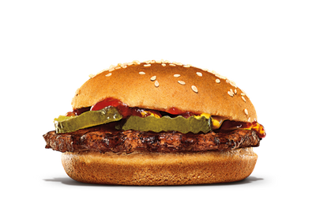

Burguer
Ingredients
- Bread.
- Meat.
- Tomato.
- Lettuce.
- Potato rubble.
- Sauces (if you want).
- Bacon
Steps
- Prepare the Ingredients:
• Tomato: Slice into medium-thick rounds.
• Lettuce: Rinse and dry the leaves.
• Bacon: Cook the bacon strips in a pan over medium heat until crispy. Set aside on paper towels.
• Potato rubble: If not pre-cooked, fry or bake until crispy. Think of it like crushed fries or hash browns.
-
Cook the Meat Patty:
• Shape the ground beef into a patty if not pre-formed.
• Season with salt and pepper.
• Heat a pan or grill over medium-high heat.
• Cook the patty for about 3 - 4 minutes on each side (or to your desired doneness).
• Optionally, add cheese on top during the last minute and cover to melt.
-
Toast the Buns:
• Cut the burger buns in half.
• Toast them face-down in a pan for 1 - 2 minutes until golden.
-
Assemble the Burger:
• Bottom bun
• A layer of sauce
• Lettuce
• Cooked meat patty
• Crispy bacon strips
• Tomato slice(s)
• A sprinkle of crispy potato rubble
• More sauce (if desired)
• Top bun
- Serve and enjoy:
